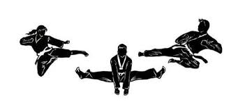

¿QUE ES EL ARTE MARCIAL DEL TAEKWONDO?
Para entender primero acerca del mundo del taekwondo debemos saber inicialmente que es un arte marcial, ¿pero que es un arte marcial? Las artes marciales, también llamadas artes militares o artes castrenses, son prácticas y tradiciones cuyo objetivo es someter o defenderse mediante una técnica concreta.
Entonces el Taekwondo es un arte marcial originario de Corea del Sur, conocido por su énfasis en técnicas de patadas rápidas y potentes, combinadas con golpes de manos, bloqueos y movimientos defensivos.
Su nombre significa "el camino de los pies y las manos" (*Tae* = pie, *Kwon* = mano, *Do* = camino), reflejando su enfoque en el uso del cuerpo como herramienta de defensa y ataque.
Más que un sistema de combate, el Taekwondo es una disciplina que busca el desarrollo integral de quien lo practica, fortaleciendo tanto el cuerpo como la mente.
Sin olvidar que al ser una disciplina tiene sus principios fundamentales:
- cortesia
- integridad
- perseverancia
- autocontrol
- espirito indomable
Estos principios guían a los practicantes hacia un estilo de vida basado en el respeto, la autoexigencia y la superación personal.
Reconocido como deporte olímpico desde el año 2000, el Taekwondo también es una actividad competitiva que incluye combates como:
Sin embargo, su esencia radica en el equilibrio entre la destreza física, el autocontrol emocional y el crecimiento espiritual, convirtiéndose en un camino de vida para millones de personas en todo el mundo.

CLASES DEL TAEKWONDO

Aunque comparten el nombre y raíces coreanas podemos decir que cada organización practica un Arte Marcial distinta. Cada organización o estilo trabaja con su propia nomenclatura, sus formas, su reglamento deportivo, su propia manera de realizar las técnicas e incluso en el cómo se escribe el nombre del arte en cuestión, todo junto en el caso de la Federación Mundial (WT) Taekwondo, y separando la palabra “Do” en el caso de la Federación Internacional (ITF) Taekwon-Do.
DIFERENCIAS
ITF:Es el denominado “movimiento ondulatorio” (sine wave) que salvo excepciones marca el cómo moverse en todas las técnicas.
Las formas o Tules son muy intrincadas y recuerdan a las katas de Karate.
WT: Es la ejecución de las patadas en todo el amplio espectro de estas (englobando los giros, saltos, combinaciones, etc.)
Las formas o Pumses son muy lineales y de complejidad ascendente.

COMBATE
WT: Están pensadas para una mayor ostentación en los Juegos Olímpicos quitando movimientos potencialmente peligrosos y limitando la cantidad de técnicas permitidas, las protecciones cubren la mayor parte del cuerpo del practicante, pudiendo estos ejercer la máxima potencia y competir al KO.
ITF: Las reglas deportivas son muy similares a las de Kickboxing protegiendo a los competidores mínimamente con Guantillas Pad y botines con talonera , quedando prohibidos los KO.

Ahora que hicimos concimiento de algunas diferencias acerca de las clases de taekwondo ITF y WT nos podremos adentrar un poco mas en estas artes marciales